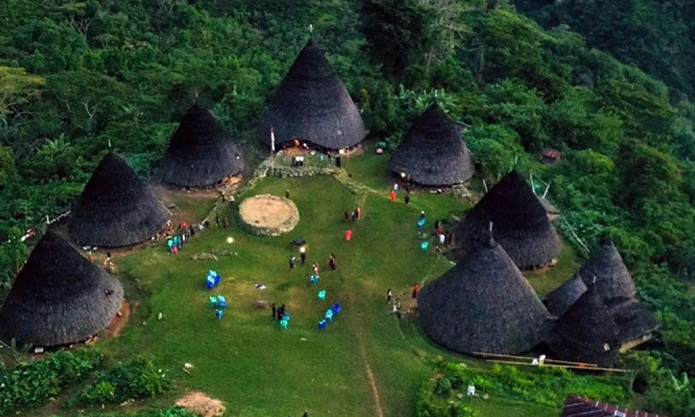

Indonesia, secara resmi Republik Indonesia, adalah sebuah negara
kepulauan di Asia Tenggara yang dilintasi garis khatulistiwa dan
berada di antara daratan benua Asia dan Oseania. Dengan lebih dari
17.000 pulau, Indonesia adalah negara kepulauan terbesar di dunia.
Bhinneka Tunggal Ika, yang berarti "Berbeda-beda tetapi tetap satu,"
adalah semboyan nasional yang mencerminkan keragaman suku, budaya,
dan bahasa yang disatukan oleh bahasa persatuan, Bahasa Indonesia.
Indonesia memiliki luas wilayah sekitar 1,9 juta km², menjadikannya
negara terbesar ke-14 di dunia. Dengan lebih dari 300 kelompok etnis
dan lebih dari 700 bahasa yang digunakan, Indonesia adalah salah
satu negara paling beragam secara budaya di dunia.
Dengan populasi yang diperkirakan mencapai lebih dari 284 juta jiwa
pada tahun 2025, Indonesia merupakan negara terpadat keempat di
dunia. Sebagai negara kepulauan terbesar di dunia, wilayahnya
mencakup lebih dari 17.000 pulau.
Secara ekonomi, Indonesia merupakan kekuatan dominan di kawasan.
Dengan Produk Domestik Bruto (PDB) nominal yang diperkirakan sekitar
$1,4 triliun, Indonesia kokoh sebagai ekonomi terbesar di Asia
Tenggara (ASEAN) dan berada di peringkat 16 dunia.
Semangat persatuan dalam keragaman yang luas ini terangkum dalam
semboyan nasional Bhinneka Tunggal Ika, yang berarti "Berbeda-beda
tetapi tetap satu," dan menjadi cerminan keragaman suku, budaya, dan
bahasa yang disatukan oleh bahasa persatuan, Bahasa Indonesia.
Perjalanan Singkat Sejarah dan Milestone Indonesia
Perjuangan kemerdekaan Indonesia adalah sebuah proses panjang yang
puncaknya terjadi pada 17 Agustus 1945, ketika Soekarno dan Mohammad
Hatta memproklamasikan kemerdekaan Indonesia. Momen penting ini
diikuti oleh perjuangan revolusi fisik melawan kekuatan kolonial
hingga pengakuan kedaulatan pada tahun 1949. Setelah pengakuan
kedaulatan, perjalanan bangsa berlanjut dengan berbagai peristiwa
penting seperti Dekrit Presiden 5 Juli 1959 yang mengubah sistem
politik, integrasi Irian Barat pada tahun 1963 yang melengkapi
wilayah kedaulatan, hingga peluncuran Satelit Palapa pada 1976
sebagai lompatan teknologi bangsa. Milestone penting lainnya
termasuk Konferensi Asia-Afrika di Bandung pada 1955 yang
mengukuhkan posisi Indonesia di panggung dunia, serta era Reformasi
pada 1998 yang membawa Indonesia ke gerbang demokrasi modern.
1908: Kebangkitan Nasional
Berdirinya Boedi Oetomo yang menandai dimulainya pergerakan
nasional yang terorganisir.
1928: Sumpah Pemuda
Ikrar pemuda-pemudi Indonesia yang menegaskan cita-cita satu
tanah air, satu bangsa, dan satu bahasa.
1945: Proklamasi Kemerdekaan
Pembacaan teks proklamasi oleh Soekarno-Hatta yang menyatakan
kemerdekaan Indonesia.
1949: Serangan Umum 1 Maret & Pengakuan Kedaulatan
Serangan di Yogyakarta yang membuktikan eksistensi RI dan
berujung pada pengakuan kedaulatan oleh Belanda.
1955: Konferensi Asia-Afrika
Indonesia menjadi tuan rumah konferensi yang mempersatukan
negara-negara Asia-Afrika di panggung dunia.
1959: Dekrit Presiden
Dikeluarkannya dekrit yang mengembalikan UUD 1945 dan memulai
era Demokrasi Terpimpin.
1963: Integrasi Irian Barat
Irian Barat (sekarang Papua) secara resmi kembali ke pangkuan
Negara Kesatuan Republik Indonesia.
1976: Peluncuran Satelit Palapa
Lompatan teknologi yang menyatukan komunikasi di seluruh
nusantara melalui sistem satelit domestik.
1998: Era Reformasi
Gerakan massa yang berhasil mengakhiri 32 tahun masa Orde Baru
dan membuka gerbang demokrasi modern.
Berlokasi di Jakarta, Monas adalah monumen peringatan setinggi 132
meter yang didirikan untuk mengenang perlawanan dan perjuangan
rakyat Indonesia untuk merebut kemerdekaan. Mahkota lidah api di
puncaknya dilapisi emas dan melambangkan semangat perjuangan yang
menyala-nyala.
Tugu Pahlawan (Surabaya)
Monumen ikonik di Surabaya ini didirikan untuk memperingati
Pertempuran 10 November 1945. Bentuk paku terbaliknya melambangkan
semangat juang Arek-arek Suroboyo yang tak pernah padam dalam
mempertahankan kemerdekaan.
Lawang Sewu (Semarang)
Secara harfiah berarti "Seribu Pintu", gedung bersejarah ini
menjadi saksi bisu pertempuran lima hari di Semarang. Dengan
arsitektur yang megah, Lawang Sewu kini menjadi museum sejarah
perkeretaapian dan simbol keberanian para pejuang muda.
Museum Benteng Vredeburg (Yogyakarta)
Terletak di titik nol kilometer Yogyakarta, benteng ini kini
menjadi museum yang menyajikan diorama-diorama perjuangan bangsa.
Tempat ini memberikan gambaran kronologis sejarah kemerdekaan
Indonesia yang sangat lengkap dan terperinci.
Gedung Sate (Bandung)
Ikon Kota Bandung ini menjadi saksi peristiwa heroik di mana tujuh
pemuda gugur saat mempertahankannya dari serangan pasukan Gurkha.
Ornamen tusuk sate di menara utamanya kini menjadi lambang
semangat perjuangan rakyat Jawa Barat.
Gunung Bromo di Jawa Timur adalah salah satu gunung berapi aktif
yang paling terkenal di Indonesia. Pemandangan matahari terbit di
Bromo, dengan latar belakang kawah yang mengeluarkan asap dan
lautan pasir yang luas, menjadi daya tarik utama bagi wisatawan
domestik maupun mancanegara.
Raja Ampat (Papua Barat)
Dikenal sebagai surga bagi penyelam, Raja Ampat adalah gugusan
pulau karst yang menakjubkan di tengah laut biru. Keanekaragaman
hayati bawah lautnya adalah salah satu yang terkaya di dunia,
menjadikannya destinasi impian untuk snorkeling dan diving.
Danau Toba (Sumatera Utara)
Danau Toba adalah danau vulkanik terbesar di dunia, dengan Pulau
Samosir yang memesona di tengahnya. Selain keindahan alamnya yang
spektakuler, Danau Toba juga kaya akan budaya Batak yang unik dan
menarik untuk dijelajahi.
Kawah Ijen (Jawa Timur)
Kawah Ijen menawarkan dua fenomena alam yang langka: danau kawah
berwarna biru toska yang asam dan api biru (*blue fire*) yang
hanya bisa dilihat pada malam hari. Pemandangan para penambang
belerang tradisional juga menjadi daya tarik unik di sini.
Pulau Komodo (Nusa Tenggara Timur)
Sebagai bagian dari Taman Nasional Komodo, pulau ini adalah
habitat asli Komodo, kadal terbesar di dunia. Selain melihat satwa
purba ini, pengunjung dapat menikmati pemandangan perbukitan
sabana yang eksotis dan pantai berwarna merah muda (*pink beach*).
Ubud dianggap sebagai jantung budaya Bali. Tempat ini terkenal
dengan sawah teraseringnya yang permai, seni tari tradisional,
kerajinan tangan, serta menjadi pusat kegiatan yoga dan relaksasi
yang menawarkan pengalaman budaya otentik.
Candi Borobudur (Jawa Tengah)
Sebagai candi Buddha terbesar di dunia dan situs Warisan Dunia
UNESCO, Borobudur adalah mahakarya arsitektur yang megah.
Dindingnya dihiasi ribuan panel relief yang menceritakan ajaran
Buddha dan kisah-kisah dari masa lampau.
Tana Toraja (Sulawesi Selatan)
Wilayah dataran tinggi ini terkenal dengan ritual pemakaman "Rambu
Solo" yang unik dan kompleks. Budaya Toraja juga tercermin dari
rumah adatnya yang ikonik, Tongkonan, dengan atap berbentuk
seperti perahu yang menjulang ke langit.
Tari Kecak di Uluwatu (Bali)
Ini adalah pertunjukan seni drama tari yang spektakuler. Puluhan
penari pria membentuk lingkaran sambil menyuarakan "cak-cak"
secara ritmis, mengisahkan epos Ramayana. Pertunjukan ini semakin
magis karena dipentaskan di Pura Uluwatu saat matahari terbenam.
Desa Wae Rebo (Nusa Tenggara Timur)

Dikenal sebagai "desa di atas awan", Wae Rebo adalah sebuah desa
adat terpencil yang melestarikan rumah Mbaru Niang berbentuk
kerucut yang unik. Mengunjungi Wae Rebo menawarkan pengalaman
mendalam tentang kearifan lokal dan kehidupan masyarakat
Manggarai.
Sudirman Central Business District (SCBD) adalah jantung keuangan
Indonesia. Kawasan ini merupakan rumah bagi Bursa Efek Indonesia,
kantor pusat bank-bank terbesar, perusahaan multinasional, dan
lembaga finansial, menjadikannya pusat perputaran ekonomi utama di
negara ini.
Kawasan Industri MM2100 (Bekasi)
Terletak di koridor timur Jakarta, MM2100 adalah salah satu
kawasan industri terbesar dan paling modern di Indonesia. Tempat
ini menjadi basis produksi bagi banyak perusahaan otomotif dan
elektronik multinasional, serta menjadi tulang punggung sektor
manufaktur nasional.
Pelabuhan Tanjung Perak (Surabaya)
Sebagai pelabuhan tersibuk kedua di Indonesia, Tanjung Perak
adalah gerbang utama perdagangan untuk kawasan Indonesia Timur.
Pelabuhan ini menangani arus peti kemas domestik dan internasional
yang sangat besar, menjadikannya hub logistik yang vital bagi
perekonomian.
Kawasan Ekonomi Khusus (KEK) Batam
Dengan lokasinya yang strategis berdekatan dengan Singapura, Batam
berfungsi sebagai Kawasan Ekonomi Khusus (KEK) dan zona
perdagangan bebas. Pulau ini menjadi pusat penting untuk industri
manufaktur, galangan kapal, dan sebagai jembatan logistik
internasional.
BSD City (Tangerang)
BSD City berkembang pesat menjadi pusat bagi ekonomi digital dan
kreatif. Kawasan ini menjadi lokasi bagi kantor pusat perusahaan
teknologi, pusat data (data center), startup, serta universitas
terkemuka, menjadikannya sebuah "Silicon Valley" versi Indonesia.